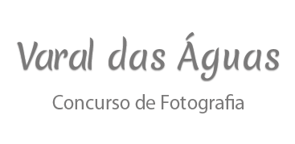

Concurso de fotografia para todos os técnicos do Inema para exposição de fotos que retratem a temática água (os desafios e as belezas encontradas em campo) pelos colaboradores. Além de uma apresentação cultural com um artista de rua (poesia, musica, cordel) que aborde a temática água.
20 á 14/03/2017 nas divisórias da Ouvidoria (em frente ao elevador)
20/03/2017 das 16:30h ás 17:30h.
Objetivos
Promover a seleção de 100 fotografias produzidas por colaboradores do Inema em comemoração ao dia da água, que será elaborado um mural de fotos denominado de "Varal das Águas".
Dos Participantes
Poderão participar do Concurso Fotográfico 2017: Todos os colaboradores do Instituto do Meio Ambiente e Recursos Hídricos - INEMA e Secretaria do Meio Ambiente - SEMA.
Das especificações das fotografias participantes
As fotografias devem abordar somente o tema OS DESAFIOS E AS BELEZAS RETRATADAS EM CAMPO REFERENTE À SITUAÇÃO HÍDRICA, devendo ser obrigatoriamente a foto ser tirada em inspeção em campo a serviço do Inema.
Premiação final do concurso
As 05 (cinco) primeiras fotografias que forem mais votadas nas redes sociais (Favebook e Instagram) do Inema, receberá como prêmio.
Todas as fotos que retrate da temática água (tais como situação de secas ou excedentes hídricos, as belexas e os desafios de se trabalhar com os recursos híbridos etc.) serão bem vindas.
A foto vencedora irá ganhar um kit de brinde (Agenda, caneta, livro).